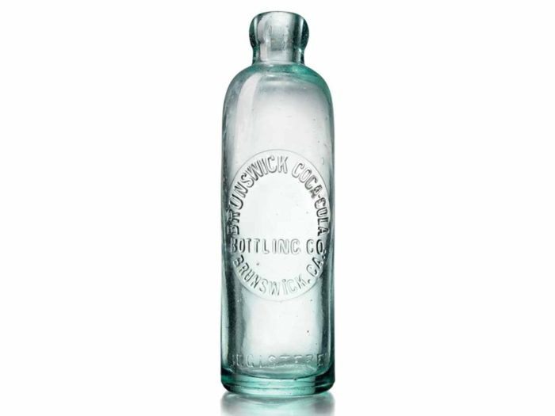
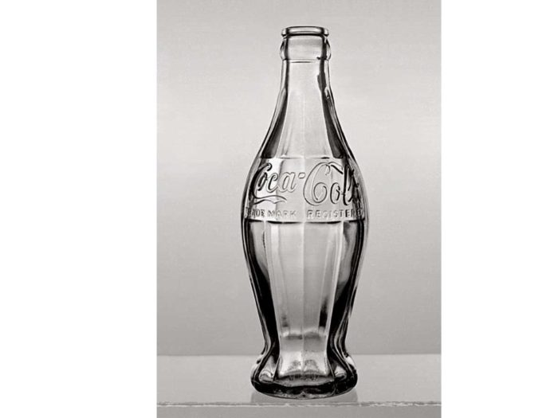

Історія розвитку бренду Coca-Cola
У 1886 році фармацевт з Атланти створив новий вид содової та назавжди змінив світ. У травні Coca-Cola відсвяткує вже свій 133 день народження. За даними NBC News, звичайна та дієтична «Кола» — найпопулярніші газовані напої у США.За цей час бренд Coca-Cola зазнав доволі великих трансформацій.У нашій статті ми проілюструємо вам найяскравіші моменти цього бренду.
Історія заснування бренду
Компанія Coca-Cola була заснована у 1886 році, коли фармацевт Джон Пембертон (John Stith Pemberton)
винайшов новий вид газованого напою. Тоді він коштував всього 5 центів.
Одна з найпопулярніших
легенд про Coca-Cola — це те, що у ній раніше був кокаїн. Це правда, але у 1905 році цю речовину
виключили зі складу напою.
Перші пляшки Coca-Cola з’явилися у 1899 році. У них були металеві кришки. До цього «Колу» можна було придбати лише на спеціальних стійках з газованою водою.
Перед самою смертю Пембертона (через 2 роки після того, як було винайдено «Колу»), підприємець Аса Кендлер (Asa Griggs Candler) викупив долю компанії Coca-Cola. Після того, як Пембертона не стало, Кендлер зіграв важливу роль у популяризації напою в країні.
Розвиток бренду
Через деякий час троє підприємців усього за $1 купили у Кендлера права на виробництво «Коли». Саме
завдяки їм з’явилися знамениті пляшки з газованим напоєм.
У 1906 році Coca-Cola почала виробляти
«Колу» у нових пляшках з оновленим логотипом, аби
відрізнятися від напою конкурентів.
До 1915 року дизайн пляшки став більше нагадувати всіма улюблений варіант. Його запатентувала компанія Root Glass Company. Дизайнери хотіли, аби пляшку популярного напою можна було відрізнити лише по одному дотику.
Знаменита різдвяна реклама Coca-Cola вперше з’явилася у 1920-х роках, назавжди змінивши сприйняття людей Санта-Клауса. За словами представників торгової марки, вони хотіли вкорінити цей персонаж (раніше Санта-Клауса зображали по-різному – наприклад, високим та худим чоловіком або страшкуватим ельфом – ред.).Це зображення Санта-Клаусу намалював ілюстратор Хаддон Сандблом. Його оригінальні масляні портрети цього персонажа використовувались у кожній рекламі Coca-Cola. З того часу Санта-Клаус став невіддільною частиною бренду.
У 1920-ті роки «Колу» почали вперше продавати в упаковуванні по шість пляшок. Такий підхід зробив гуртові закупки зручніше та збільшили продажі. А у 1928 році кількість проданої «Коли» в пляшках вперше перевищило кількість продажу на стійках з розливною газованою водою.
У 1950-х роках форма пляшки з «Колою» стала тою самою, яку ми знаємо в сучасному її вигляді.
Вона називається «контурною пляшкою».
У 1950 році така пляшка з’явилася на обкладинці журналу
TIME. Так Coca-Cola стала першим продуктом, яка таким чином закріпила позицію бренду. У 1977
році були зареєстровані права на дизайн контурної пляшки – раніше у відношенні до пакування це
було рідкістю.
Пластикові пляшки з «Колою» з’явилися тільки через пів століття. У 1993 році компанія заявила, що буде виготовляти напій у такому пакуванні тому, що вона найбільш безпечна для навколишнього середовища. Але тепер ми знаємо, що це зовсім не так. Зараз Coca-Cola активно займається переробленням матеріалів, аби її пластикові пляшки не засмічували навколишнє середовище. Перша Coca-Cola в алюмінієвій банці з’явилася у 1960 році. На банці був зображений силует пляшки, аби покупці не розгублювалися. Перша банка дуже нагадувала сучасний варіант, але була менш заокругленою.